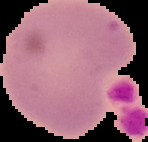
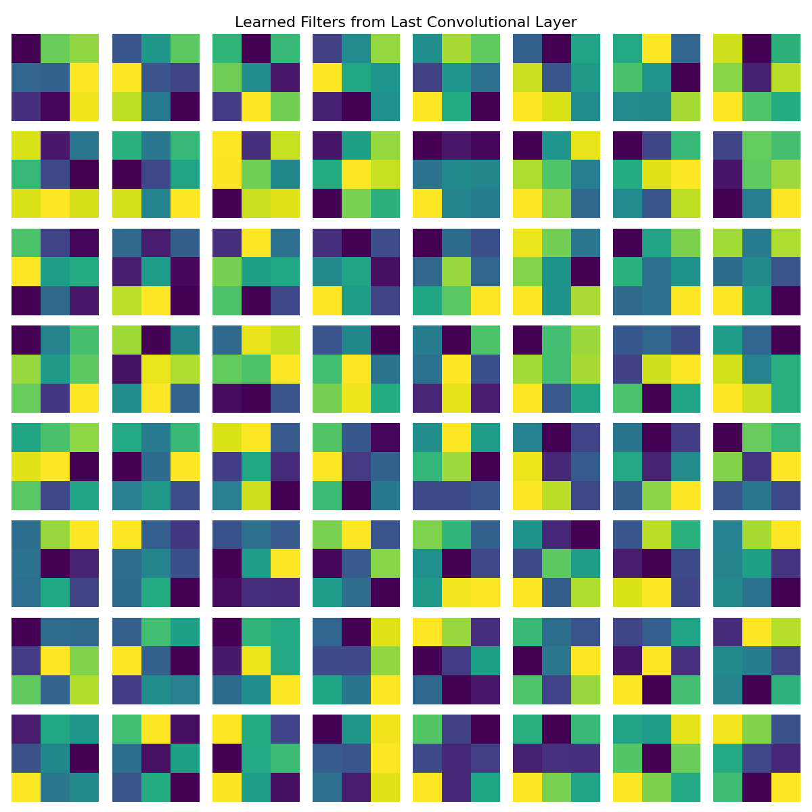
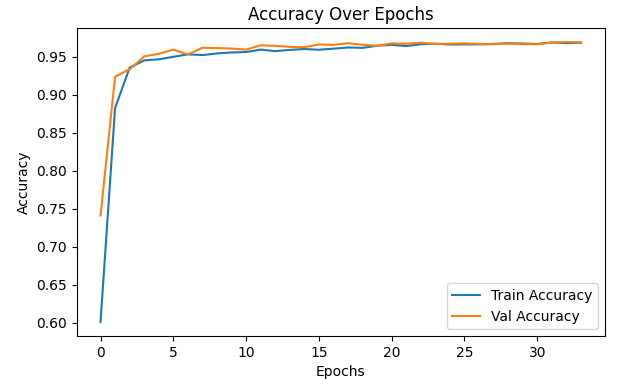
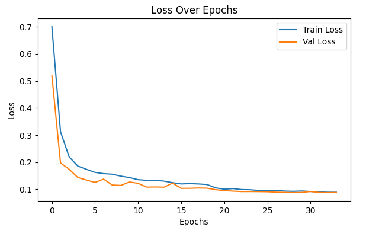
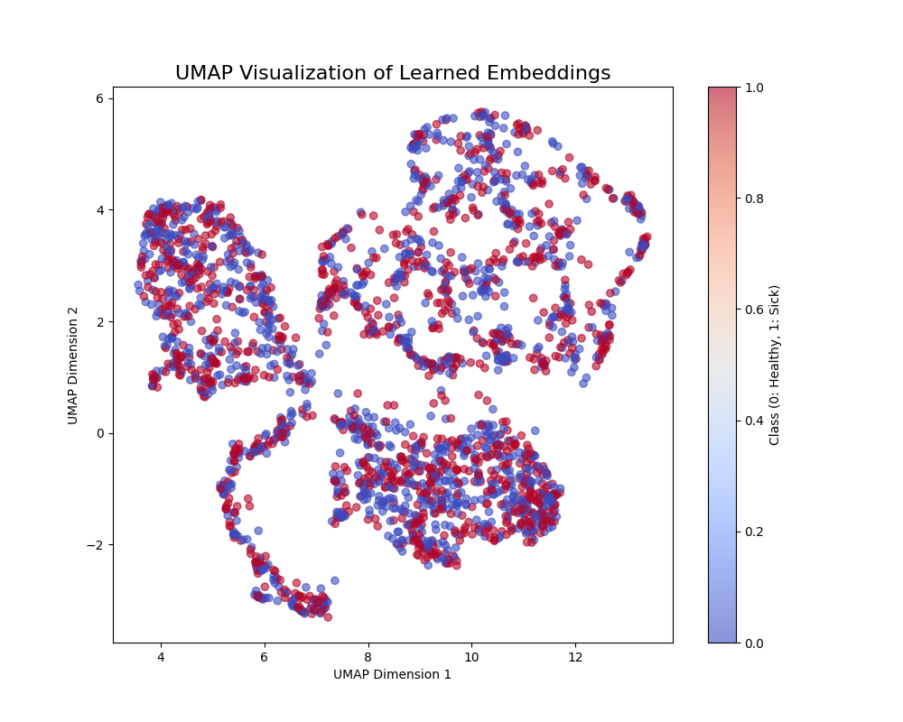

2 min read.
Malaria is a life-threatening disease caused by Plasmodium parasites, and timely diagnosis is critical to
treatment. In this project, I built a Convolutional Neural Network (CNN) to classify whether a given cell
image is parasitized or uninfected.
The goal: make detection faster and more accurate using deep learning by classifying microscope images
of blood cells based on whether they are parasitized by Plasmodium or not. This is a binary classification
problem tackled using a custom residual CNN architecture.

To improve the model's ability to generalize and handle variability in image orientation, lighting, and scale,
I applied a rich set of transformations:
- Random horizontal and vertical flips
- Random brightness, contrast, saturation, and hue shifts
- Random rotations (0–270°)
- Random zooming followed by resizing and cropping
This helped mimic real-world distortions in microscopic imaging.
I implemented a CNN with residual connections to tackle the vanishing gradients problem and boost performance on deeper networks.
Architecture Summary:
Initial Conv Layer:
32 filters, 3×3 kernel, ReLU activation
Batch Normalization
Max Pooling
Residual Blocks:
3 blocks with increasing filters: 64, 128, 256
Each block contains:
2 convolutional layers
Batch normalization
Shortcut/skip connection
Fully Connected Layers:
Flatten
Dense(256) → ReLU → Dropout(0.5)
Dense(128) → ReLU → Dropout(0.5)
Output Layer: 1 neuron with sigmoid activation
Training Setup:
Optimizer: AdamW (lr = 0.0001, weight decay = 1e-4)
Loss Function: Binary Cross-Entropy

The model performed consistently well, showing both high accuracy and generalization across training and
validation sets.



To understand how the model was separating the two classes, I visualized the embeddings using:
t-SNE – Showed clear separation between parasitized and uninfected cells
UMAP – Reinforced the same separation with smoother clustering.
Data augmentation significantly boosted the model's robustness and prevented overfitting. Residual connections made training deeper architectures much more efficient. Even with relatively few layers, this architecture delivered state-of-the-art results for binary medical image classification. This project showcases the power of CNNs in medical diagnostics and the potential of using residual blocks even in smaller networks. With more data and fine-tuning, this model could be part of a real-time diagnostic pipeline for malaria detection in low-resource settings.